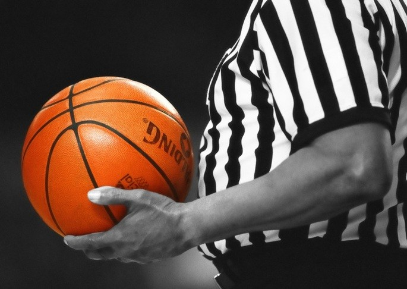

Reglas Originales
Las reglas originales del baloncesto fueron escritas por el Doctor James Naismith en diciembre de 1891, en Springfield, Massachussets y publicadas en enero del año siguiente en The Triangle, el periódico escolar del Springfield College.
1. El balón se puede lanzar en cualquier dirección, con una o con las dos manos.
2. El balón se puede golpear en cualquier dirección, con una o las dos manos, pero nunca con el puño.
3. El jugador no puede correr con la pelota. El jugador debe lanzar el balón desde el lugar en el que la coja. En el caso de que un jugador capture la pelota en plena carrera, en cuanto la coja deberá intentar detenerse.
4. El balón debe llevarse en las manos o entre ellas. Los brazos o el cuerpo no se deben usar para sostenerlo.
5. No está permitido cargar con el hombro, agarrar, empujar, poner la zancadilla o golpear de manera alguna al oponente. La primera infracción de esta regla por parte de cualquier jugador se considerará una falta; la segunda le descalificará hasta que se consiga la siguiente canasta o, en el caso de que la intención de lesionar fuera clara, se le descalificará durante todo el partido, sin sustituto.
6. Se considera falta golpear el balón con el puño, la violación de las reglas 3 ó 4 y lo descrito en la nº 5.
7. Si cualquiera de los equipos hace tres faltas consecutivas, se contabilizará una canasta para el equipo contrario (consecutivas significa que durante ese tiempo el oponente no haya cometido ninguna falta).
8. Se contará canasta cuando el balón sea lanzado o golpeado desde el suelo hasta la cesta y se quede en ella, siempre que los defensores no toquen el balón o dificulten la canasta. Si el balón se queda en el borde de la cesta sin llegar a entrar y el oponente mueve la canasta, se contabilizará como punto.
9. Cuando el balón salga fuera, la primera persona que lo toque lo lanzará al campo de juego. En caso de discusión el árbitro lo lanzará directamente al campo. El que saca dispone de cinco segundos para hacerlo; si retiene el balón más tiempo, el balón pasará al equipo contrario. Si cualquiera de los equipos persiste en retrasar el juego, el árbitro auxiliar le señalará falta.
10. El árbitro auxiliar será el juez de los hombres, anotará las faltas y avisará al árbitro principal cuando se cometan tres faltas seguidas. Podrá descalificar a los jugadores según lo establecido en la regla número 5.
11. El árbitro principal juzgará lo que se refiere al balón y determinará cuándo éste está en juego o ha salido fuera, a qué equipo pertenece, además de llevar el control del tiempo. Decidirá cuándo se ha marcado un tanto y contabilizará las canastas y asimismo realizará las obligaciones habituales de un árbitro.
12. El tiempo se distribuirá en dos mitades de quince minutos, con un descanso de 5 minutos entre ellas.
13. El equipo que obtenga más puntos dentro de ese tiempo será considerado ganador. En caso de empate, si los capitanes acuerdan hacerlo, el partido se podrá continuar hasta que se marque una canasta.